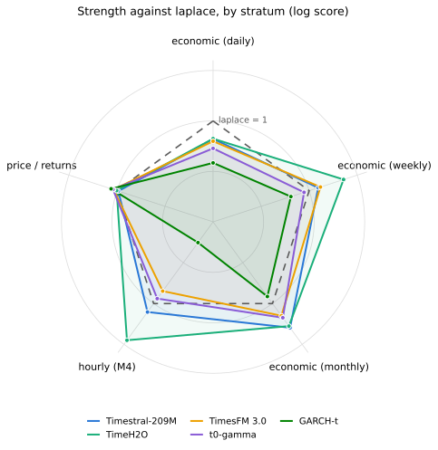
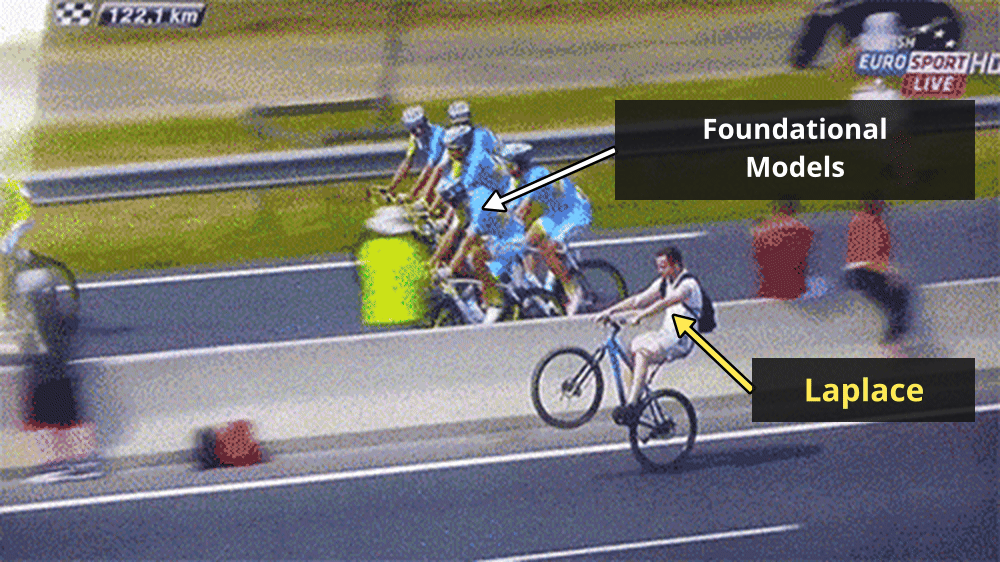
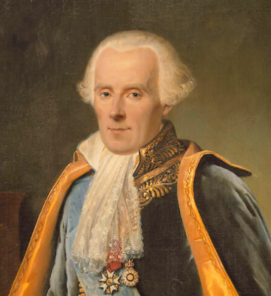

skaters
Home of Laplace, a light, fast, automatic distributional univariate time-series prediction algorithm that also improves the performance of other time-series models, including Prophet. Recommended for non-price economic time-series and available in Python, JavaScript, R, Julia and Rust.
One call, zero dependencies, every prediction a full probability distribution computed online in O(1).
Quick start
pip install skaters. Every prediction is a Dist: a weighted
Gaussian mixture carrying the mean, the spread, quantiles, and a density at once. You build
models by composition: transforms chain, ensembles nest, and a distributional leaf
sits at the bottom (see the Guide).
from skaters import laplace
f = laplace(k=3)
state = None
forecast = None # the fan issued LAST tick, aimed at this y
for y in observations:
if forecast is not None:
forecast[0].logpdf(y) # one-step-ahead log score
forecast[0].cdf(y) # one-step-ahead PIT
forecast, state = f(y, state)
forecast[0].mean # point forecast for the NEXT tick
forecast[0].std # uncertainty
forecast[0].quantile(0.975) # upper edge of the central 95% band
Score a forecast only against observations that arrive after it was issued; the
predictive returned alongside $y$ aims at the next tick, and the parade in
state["pit"]/state["z"] does this bookkeeping for you. Every
skater returns a list of predictive distributions, one per horizon
$h = 1, \ldots, k$. Point forecasts, uncertainty, density evaluation, and quantiles are all
facets of the same object.
Demonstrations
Each demo runs live in your browser: the playground, a race against classical baselines on FRED series, whitening against a rolling z-score, the Rosenblatt bijection, forecasting under a bound, and the Python package itself in Pyodide. All demos →
Watch it forecast
Live in your browser: pick a data regime, change the horizon, and watch the predictive distribution, the transform paths and the clocks adapt. Full page →
Have a conversation about skaters
Paste this into ChatGPT, Claude or any chat assistant, then describe your series and what you need.
I would like to discuss skaters (https://skaters.microprediction.org), an open-source package for online, distributional, univariate time-series forecasting in Python (with a Rust core), JavaScript, R and Julia. Please read these pages before answering: - FAQ: https://skaters.microprediction.org/faq.html - Examples: https://skaters.microprediction.org/examples.html - Methodology: https://skaters.microprediction.org/guide.html - Scope and misuse: https://skaters.microprediction.org/scope.html - Claude skills: https://skaters.microprediction.org/skills.html - Results against foundational models: https://foundationalprediction.com - Why one step ahead: https://foundationalprediction.com/horizon-note.pdf Key points: - laplace is the general forecaster; granger is laplace with trained hyperparameters (monthly, weekly, hourly). - Each call takes one observation and returns a full predictive distribution for the next value, in O(1) time. - It was built for large numbers of economic series and is scored one step ahead on held-out log likelihood. - It is univariate: it does not use covariates or exogenous regressors, and it does not replace foundational time-series models. - Supply prior knowledge as a transform (for example, a log transform for a positive series) and use natural units. My series and goal:
Laplace was written for monitoring hundreds of thousands of private and public economic series because we couldn't find anything better. We think some foundational models are slightly better, but far less usable at present. Your mileage may vary. The leaderboards →
Each language is an independent, parity-locked port, checked against the reference to 1e-6 (Python also has a Rust backend for speed). Model specifications serialise to JSON, and fitted state checkpoints and resumes within a language. The languages →
A calibrated surprise signal comes with the state: each point is scored against the
forecast issued for it, so state["z"] is a normalized residual and
state["pit"] its probability integral transform.
See it live →
Turning that signal into streaming anomaly detection with measured false-alarm rates is
its own project, timemachines,
built on skaters.
How Laplace complements foundational models
laplace is tiny, fast and dependency-free, and it runs in five languages:
Python, JavaScript, R, Julia and Rust. A forecast update takes microseconds on one CPU
thread, where a pretrained model takes milliseconds or more
(speed,
performance). Its secondary use is as a reference point
that marks the advances in foundational time-series models.
Where foundational models are better
On monthly, weekly and hourly series. Paired per series on log score, with each model's stronger density reconstruction, the best foundational model on each of these strata wins far more series than it loses:
| Series | Best model | Wins / draws / losses | Median gain (nats) | CRPS ratio |
|---|---|---|---|---|
| Monthly | Timestral-209M | 2,037 / 3,182 / 381 | +0.11 | 0.88 |
| Weekly | TimeH2O | 1,383 / 1,324 / 306 | +0.11 | 0.82 |
| Hourly (M4) | TimeH2O | 186 / 228 / 0 | +0.18 | 0.83 |
On daily economic series every foundational and classical model loses more series than it wins. On daily
prices the foundational models are level with laplace, and a fitted GARCH-t
is ahead (743 wins, 216 losses). Wins and losses are
Diebold–Mariano verdicts at each series; a CRPS ratio below 1 favours the compared
model. The leaderboards →

laplace by stratum: per-series Diebold–Mariano
verdicts on log score, draws split; laplace is the dashed ring. Outside the
ring the compared model is ahead on that stratum. Each foundation model is shown with its
stronger density reconstruction.
The leaderboards →
One general forecaster?

skaters exposes one general forecaster, laplace,
and one trained one, granger. Everything else is a building
block you can compose. The guide →
from skaters import laplace, granger
f = laplace(k=1)
g = granger(frequency="monthly") # or "weekly", "hourly"
A likelihood-weighted ensemble over the full candidate pool, model first, conform
last, with the lattice projection on by default, and an Ornstein–Uhlenbeck mean-reversion
group in the multi-step (k>1) pool. Specialist behaviour (mean reversion,
GARCH-style volatility) is reachable by composition (ou_transform,
garch_leaf) when you have a strong prior.
Guide →
The Dist object, transforms, conjugation, and ensembles: how it all composes.
Tiki-taka →
The same algorithm as a football move: switch the ball out to an easier problem and work it back to the original space to score, in your language and team.
Benchmarks →
The studies vs ARIMA/ETS/GARCH/conformal and the foundation models, and the papers behind them.
The sandwich →
Run any forecaster or detector in laplace's coordinates, map back
exactly, and it improves, with no retraining.
Languages →
Python, JavaScript, R and Julia over a portable Rust core, every implementation verified identical to 1e-6.
Live demos →
Watch a policy forecast live, with its uncertainty band, on data you choose.
Robustness explorer →
Slice the non-price benchmark any way you like: random, by category, keyword,
seasonality, tails, and watch laplace's win-rate hold, live.
A bijection, not just a forecaster
laplace's calibration state maps each arriving point through its own
predictive cdf, zt = Φ−1(Ft(yt))
(a causal bijection on paths, Rosenblatt 1952) whose image is, under calibration,
iid N(0,1). Run any forecaster in those coordinates and score it back in the
original ones by exact change of variables: on 30 FRED series, ETS, AutoARIMA,
GARCH(1,1) and Prophet each gain ≈+2 nats/point and lose to their
fronted selves on 30/30 series, converging to laplace plus a few
hundredths of a nat. See the diagram computed live,
or the anomaly-detection consequences at
timemachines (DSPOT 5.2×,
RRCF 1.8× in the same coordinates).
Heritage
skaters is a from-scratch rewrite that distils ideas from
timemachines, the
competition-winning forecasting package by Peter Cotton, and builds on years of experience
running live distributional prediction contests at
microprediction, where forecasts are scored,
continuously, as full distributions rather than points.
Get the source
github.com/microprediction/skaters
·
pip install skaters
·
Examples